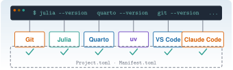

Entorno del curso
L0 · Vía L

Las ocho prácticas del curso y el proyecto globalizador suponen un puesto de trabajo que funciona: una terminal, un editor, Git, Julia, Quarto, Python con uv y Claude Code, todo sobre una copia local del repositorio. Las vías C y J explican cada herramienta por separado. Esta unidad hace otra cosa: las junta, las comprueba y deja constancia de que el conjunto responde. Terminas con una lista de verificación que puedes repetir cuando algo falle, una primera sesión de Claude Code en el repositorio y un primer commit en tu propia rama.
Tiempo orientativo: 150 minutos (unos 55 de lectura y ejercicios y unos 95 de práctica). Objetivos y prerrequisitos (5), teoría en cuatro bloques (30), práctica guiada (75), «Pídeselo a Claude» (15), ejercicios (20) y cierre (5). Los tiempos de descarga dependen de tu conexión: la primera instanciación del entorno de Julia descarga y compila muchos paquetes y puede tardar bastante más que el resto de la unidad. Los bloques de código son para tu terminal: esta página no ejecuta Julia al compilarse.
Las órdenes se han escrito para macOS y Windows (no Linux; WSL2 solo se nombra donde una herramienta lo exige) y llevan una marca:
- ✔ macOS: ejecutada durante la redacción (27-10-2026) con Zsh 5.9 en macOS 27.0.1, con Julia 1.12.3 (instalada con
juliaup), Quarto 1.10.19, Git 2.55.0, uv 0.12.23, Claude Code 2.1.304 y VS Code 1.143.1. - † Órdenes no ejecutadas en la redacción: instaladores (
brew,winget, scripts de instalación),git clone,Pkg.instantiate()yuv sync(necesitan red y modifican el equipo), y cualquier sesión interactiva de Claude Code. Proceden de C2, C4, J1 o de la documentación oficial de cada herramienta, consultada el 27-10-2026 (juliaup,uvy PowerShell 7). Los identificadores dewingetde VS Code y la extensión de Quarto son de memoria y no se han contrastado.
Lo que sí se ejecutó: los --version de las cinco herramientas; quarto check install; la comprobación de Resonancia con julia --project=.; la compilación de una página mínima con engine: julia; la secuencia de Git de L0.4 en un repositorio temporal; quarto render de esta misma página; y la lista de extensiones de VS Code (code --list-extensions) para confirmar los identificadores de Julia, Python y Claude Code.
Windows no se ha probado. El equipo de redacción es un Mac, sin PowerShell 7 instalado. Las pestañas de Windows son una traslación razonada de las órdenes de C2 y C4 y de la documentación oficial; si algo no responde como se describe, manda tu versión de Windows. No uses capturas de otra versión como prueba: pega siempre la salida de tu terminal.
Objetivos y prerrequisitos
Objetivos. Al terminar la unidad sabrás:
- instalar y comprobar con una sola lista de verificación la terminal, VS Code, Git, Julia (con
juliaup), Quarto,uvy Claude Code; - clonar Resonancia, instanciar su entorno de Julia con
julia --project=.y leer la salida dePkg.status(); - abrir una primera sesión de Claude Code en el repositorio sin saltarte la pregunta de confianza y leer sus permisos;
- hacer un primer commit en una rama propia, sin
push, y comprobar exactamente qué ha entrado; - diagnosticar los fallos de instalación habituales leyendo el mensaje y no solo el final.
Prerrequisitos. C2 · Terminal, C3 · Git y GitHub, C4 · Primeros pasos con Claude Code, J1.1 · Instalación y entorno y J1.2 · Paquetes y reproducibilidad. Una cuenta de GitHub (gratuita) y una cuenta de Claude con acceso a Claude Code (C4.2).
Reparto con otras unidades. Aquí no se vuelve a explicar lo que ya está explicado: se enlaza y se comprueba.
| Tema | Dónde se explica | Qué hace L0 |
|---|---|---|
Terminal, rutas, PATH, Homebrew y winget |
C2.1–C2.6 | Usa which -a / Get-Command para diagnosticar |
uv y proyectos de Julia, VS Code |
C2.7–C2.8 | Los instala y los une en un solo proyecto |
| Versiones de Quarto, Git y Claude Code | C2.9 | Las reúne en una lista de verificación |
| Repositorio, commit, ramas, GitHub | C3.2–C3.5 | Clona y hace un primer commit |
| Instalación, permisos y primera sesión de Claude Code | C4.2–C4.3 | Los aplica a este repositorio |
juliaup, --project=. |
J1.1.1, J1.1.3 | Las usa sin repetirlas |
Project.toml, Manifest.toml, instantiate |
J1.2 | Instancia el entorno del curso |
Temas de la unidad
- L0.1 Instalación de Julia, VS Code, Quarto, Git y Claude Code
- L0.2 Clonar Resonancia e instanciar el entorno
- L0.3 Primera sesión de Claude Code sobre el repositorio
- L0.4 Primer commit
Teoría breve
L0.1 Instalación de Julia, VS Code, Quarto, Git y Claude Code
El entorno del curso es un conjunto de herramientas independientes que cooperan a través de la terminal y de los ficheros del proyecto. Ninguna depende de un programa «maestro»: cada una se instala, se actualiza y se comprueba por separado, y se encuentra por el PATH (C2.5). La Figura 1 muestra quién habla con quién.
![Arriba, dos cuadros unidos por una línea discontinua: VS Code, editor con terminal integrada, y Terminal y shell, con Zsh en macOS y PowerShell 7 en Windows. De la terminal salen flechas hacia cinco cuadros: Git, Julia con juliaup, Quarto, Python con uv y Claude Code. Debajo, dentro de un recuadro discontinuo que representa la carpeta resonancia, cada herramienta apunta a sus ficheros: Git a la carpeta .git, Julia a Project.toml y Manifest.toml, Quarto a _quarto.yml y _freeze, uv a pyproject.toml y uv.lock, y Claude Code a CLAUDE.md y la carpeta .claude. Una flecha discontinua verde va de Quarto a Julia con la etiqueta engine julia. Abajo a la izquierda, GitHub, con una flecha de doble sentido hacia el recuadro del proyecto etiquetada clone y push.](fig/arquitectura.svg)
engine: julia; GitHub es solo la copia remota del repositorio.
Tres ideas organizan la instalación.
- Un gestor por sistema, y no instaladores sueltos. En macOS, Homebrew; en Windows,
winget(C2.6). Excepciones: Julia se instala conjuliaupy Claude Code con su instalador oficial (C4.2), porque ambos se actualizan solos. Con gestor, la instalación es reproducible y sabes qué versión tienes. - Un solo entorno por lenguaje, dentro del proyecto. Julia lee
Project.tomlyManifest.toml; Python (conuv) leepyproject.tomlyuv.lock. Nunca se instalan paquetes del curso en el Julia o el Python «del sistema». El curso usauv, no conda: si tienes conda, no estorba, pero ningún comando de esta unidad lo necesita. - Se comprueba cada paso antes de pasar al siguiente. Tras instalar,
herramienta --versionen una terminal nueva (así recoge elPATHactualizado). Es la comprobación más barata y descarta la mitad de los fallos.
Orden recomendado. Terminal (y PowerShell 7 en Windows) → Git → Julia → Quarto → uv → VS Code → Claude Code. El orden no es técnicamente obligatorio, pero va de lo más básico a lo que más depende de lo anterior: Claude Code, al final, ya encuentra Git, Julia y Quarto cuando le pidas que ejecute algo.
| Herramienta | Para qué | Cómo se instala | Comprobación | Referencia (27-10-2026) |
|---|---|---|---|---|
| Terminal y shell | Dónde se escriben las órdenes | Zsh viene con macOS; PowerShell 7 es aparte en Windows | $SHELL / $PSVersionTable.PSVersion |
Zsh 5.9; PowerShell 7.x |
| Git | Control de versiones | brew / winget |
git --version |
2.55.0 |
| Julia | Lenguaje del curso | juliaup |
julia --version |
1.12.3 |
| Quarto | Compila la web y los informes | brew / winget |
quarto --version, quarto check install |
1.10.19 |
| uv | Python y su entorno | brew / winget |
uv --version |
0.12.23 |
| VS Code | Editor con terminal integrada | brew / winget |
code --version |
1.143.1 |
| Claude Code | Agente en la terminal | Instalador oficial | claude --version |
2.1.304 |
Las versiones de referencia son un punto de partida, no una exigencia: el README del repositorio indica Julia 1.12 y Quarto 1.10. Si tu versión es mucho más antigua o más moderna, anótalo y avisa antes de «arreglarlo» a ciegas.
Este curso escribe sus órdenes para PowerShell 7 en Windows nativo y para Zsh en macOS. WSL2 (Linux dentro de Windows) no es necesario para seguir el curso. Solo interesa si quieres el sandbox de Claude Code, que según el propio repositorio no está disponible en Windows nativo, o un entorno de herramientas Linux. Elige uno y no mezcles: una carpeta de proyecto clonada dentro de WSL2 y otra en Windows son dos copias distintas, cada una con sus herramientas.
Pon a prueba lo anterior.
Acabas de instalar Julia y julia --version responde «command not found». ¿Qué haces primero?
- Reinstalar con
sudopara que tenga permisos. - Cerrar la terminal, abrir una nueva y comprobar qué ejecutable se encuentra con
which -a julia(Zsh) oGet-Command julia(PowerShell). - Instalar otra versión de Julia con otro gestor.
- Desactivar el antivirus y volver a probar.
Lo habitual es que la terminal abierta no haya recogido el PATH nuevo. Una terminal nueva y which -a / Get-Command dicen si el ejecutable existe y dónde está (C2.5, C2.6). sudo para «dar permisos» no es la solución y puede empeorar las cosas.
Como ya tienes Python con conda, el curso funciona igual sin instalar uv.
Falso. El curso gestiona Python con uv (pyproject.toml y uv.lock) y no usa conda. quarto check puede mostrar el Python de conda de tu equipo: es información sobre tu máquina, no el entorno del curso.
Da dos razones por las que el curso prefiere instalar con un gestor (brew, winget, juliaup) en lugar de descargar instaladores sueltos de cada web.
- Menciono que el gestor recuerda qué versión hay instalada y permite actualizar o desinstalar con una orden.
- Menciono la reproducibilidad (mismo comando en otro equipo) o la menor probabilidad de instalar software de una fuente dudosa.
L0.2 Clonar Resonancia e instanciar el entorno
Clonar es copiar el repositorio completo, con su historia, a tu equipo (git clone, C3.5). Tres formas de obtener el código, de más a menos recomendable:
- Clonar el repositorio público: obtienes historia y puedes hacer commits. Es lo que haremos.
- Fork y clonar el fork: necesario solo si quieres publicar tus propios cambios en tu cuenta de GitHub (C3.5). No hace falta para L0.
- Descargar el ZIP: sin historia ni Git; no sirve para este curso.
Dónde clonar importa más de lo que parece. Elige una ruta corta, sin espacios y fuera de carpetas sincronizadas (OneDrive, iCloud, Dropbox): la sincronización puede bloquear ficheros mientras Julia o Quarto los escriben, y en Windows las rutas largas dan problemas con árboles de carpetas profundos. Una carpeta Proyectos en tu carpeta personal cumple.
Qué contiene la copia. Los ficheros que importan para el entorno son estos (J1.2.2):
| Fichero o carpeta | Qué fija |
|---|---|
Project.toml |
Qué paquetes de Julia pide el proyecto |
Manifest.toml |
Qué versiones exactas de esos paquetes (y de sus dependencias) se usan |
Resonancia.jl/ |
El paquete local del curso, incorporado al entorno en modo desarrollo (path = "Resonancia.jl" en el Manifest.toml) |
pyproject.toml, uv.lock |
Lo mismo para el Python del curso |
_quarto.yml, _freeze/ |
La configuración de la web y los resultados de Julia ya calculados |
CLAUDE.md, .claude/ |
Instrucciones y permisos del proyecto para Claude Code |
Instanciar es descargar y compilar exactamente lo que dice el Manifest.toml; es el equivalente de uv sync en Python (J1.2.3). Se hace una vez por ordenador (y de nuevo si alguien cambia el Manifest.toml):
julia --project=. -e 'using Pkg; Pkg.instantiate()' # †: descarga y compila; tardaDos hechos que conviene tener claros:
--project=.significa «el proyecto de esta carpeta». Hay que lanzar Julia desde la raíz del repositorio. Desde una subcarpeta,.no contieneProject.toml; en la prueba de redacción,julia --project=. -e 'using Resonancia'ejecutado dentro delabs/falló conPackage Resonancia not found in current path✔ macOS. Ese mensaje sugierePkg.add("Resonancia"): no lo hagas; el paquete ya está en el proyecto, solo que estás en la carpeta equivocada._freeze/evita ejecutar Julia en la publicación, no en tu equipo: si renderizas una página con código, Quarto necesita Julia y las dependencias instaladas (por eso se instancia). Las páginas sin código, como esta, se compilan sin Julia.
Pon a prueba lo anterior.
¿Qué hace Pkg.instantiate() en un repositorio recién clonado?
- Actualiza todos los paquetes a su última versión.
- Descarga y compila las versiones que fija el
Manifest.toml. - Crea el fichero
Project.toml. - Instala Julia si falta.
Descarga y compila exactamente lo que recoge el Manifest.toml; no actualiza nada ni crea el proyecto (J1.2.3). Actualizar sería Pkg.update(), y en este repositorio pide confirmación.
Da igual dónde se clone el repositorio: una carpeta con espacios dentro de OneDrive funciona igual de bien que una ruta corta.
Falso como regla práctica. No es un error de Git, pero la sincronización puede bloquear ficheros mientras Julia o Quarto escriben, los espacios complican las órdenes (C2.3) y en Windows las rutas largas dan problemas. Se recomienda una ruta corta, sin espacios y fuera de carpetas sincronizadas.
Escribe la orden que muestra el estado del entorno del proyecto de Julia sin modificar nada, y di desde qué carpeta la ejecutas.
julia --project=. -e 'using Pkg; Pkg.status()', desde la raíz del repositorio. Es de solo lectura (✔ macOS, en el repositorio de redacción).
L0.3 Primera sesión de Claude Code sobre el repositorio
Claude Code se instala y se autentica según C4.2; aquí interesa qué ocurre al abrirlo en este repositorio, porque el proyecto lo configura:
CLAUDE.md: el fichero de instrucciones del proyecto (qué es Resonancia, convenciones, qué no hacer). Claude lo carga al arrancar. Son instrucciones, no garantías (C4.6)..claude/settings.json: reglas de permisos y sandbox del proyecto. Resumen de lo que configura: sin preguntar,julia --project=.,quarto render,git status/diff/log/show/add/commityuv run; siempre preguntagit push,quarto publish, el git destructivo y añadir o actualizar paquetes (Pkg.add,uv add,uv sync…); bloqueado, leerdatos/privados/,rm -rfy los ficheros.env.- El hook
bloquear-datos-privados.sh, que refuerza el bloqueo dedatos/privados/.
La pregunta de confianza. La primera vez que ejecutas claude en una carpeta, te pregunta si confías en ella. Aceptar permite que lea y aplique la configuración del proyecto: las reglas allow del proyecto solo se activan después de aceptar. Por eso se acepta solo en tu copia de un repositorio que conoces, y nunca en una carpeta descargada de origen dudoso. Es el mismo razonamiento de C4.2.
Plan de la primera sesión (todo de solo lectura):
- Abre la terminal en la raíz del repositorio y comprueba que el árbol está limpio (
git status --shortsin salida). - Ejecuta
claude, lee la pregunta de confianza y acéptala (es tu copia). - Escribe
/statusy/permissionsy anota el modo de permisos y las reglas que ves; deben coincidir con el resumen de arriba. - Pídele que lea
CLAUDE.mdy te resuma lo que entiende, sin tocar nada (el prompt está en «Pídeselo a Claude»). - Sal con
/exit.
Qué no hacer en esta sesión. No ejecutes /init: el repositorio ya tiene CLAUDE.md y /init propondría cambiarlo (C4.6). No uses --dangerously-skip-permissions ni modos sin comprobaciones (C4.3). No pegues claves ni tokens en la conversación. Y si Claude propone un comando que modifica algo, léelo antes de aprobarlo (C2.10, práctica 3).
Según el propio repositorio, el sandbox que limita lo que pueden tocar los comandos funciona en macOS y Linux/WSL2, pero no en Windows nativo. Las reglas de permisos siguen activas, pero la defensa de fondo es menor: en Windows nativo, lee con más cuidado cada comando antes de aprobarlo, o trabaja en WSL2 si quieres el sandbox. Las reglas de Bash comparan texto y se pueden esquivar; no son una frontera de seguridad por sí solas.
Pon a prueba lo anterior.
Un compañero te pasa un ZIP con un proyecto y te dice «ábrelo con claude y acepta lo que pregunte». ¿Qué haces?
- Aceptas la confianza: preguntar es solo un trámite.
- Aceptas, pero con
--dangerously-skip-permissionspara no tener que confirmar nada. - Revisas antes el contenido (en especial
CLAUDE.mdy.claude/) y solo aceptas si lo conoces y confías en su origen. - Nunca usas Claude Code con proyectos de otras personas.
La confianza permite que se lea y se aplique la configuración del proyecto (permisos, hooks…). Se concede solo a carpetas que conoces. Saltarse los permisos es la peor combinación (C4.3).
Conviene ejecutar /init en la primera sesión para que Claude «conozca» el repositorio.
Falso. El repositorio ya trae CLAUDE.md; /init propondría modificarlo. Para conocer el proyecto basta pedirle que lea CLAUDE.md sin tocar nada.
Escribe un primer prompt para Claude Code que sea de solo lectura y explica con una frase por qué no puede dañar nada.
- El prompt pide leer o resumir, no crear, editar ni ejecutar nada que modifique.
- Dice explícitamente «no modifiques nada» o equivalente.
- Pido un resultado que puedo contrastar con
CLAUDE.md.
L0.4 Primer commit
Un commit es una fotografía del proyecto con autor, fecha y mensaje (C3.2). El primero de este curso no toca el contenido: guarda en tu propia rama un pequeño fichero con las versiones de tu entorno. Sirve para comprobar de extremo a extremo que Git sabe quién eres y que sabes ver qué entra en un commit.
Convenciones del repositorio (de CLAUDE.md): commits pequeños, mensaje en español y en imperativo («Añade unidad M3»); nunca git push sin petición expresa. Por eso el primer commit:
- se hace en una rama propia (
git switch -c practica/l0-tu-usuario), para quemainsiga idéntica a la del repositorio ygit pullsea trivial más adelante; - guarda un fichero cuyo nombre empieza por guion bajo (
_mi-entorno.md): Quarto ignora los ficheros que empiezan por_, así que no se renderiza como página del curso; - se queda en tu equipo: no se hace
push.
Antes de confirmar, mira qué entra. El ciclo es siempre el mismo (C3.3): git status --short (qué cambió), git add (qué se prepara), git diff --staged (el contenido exacto de lo preparado), git commit y git show --stat (qué quedó). Si algo del diff no esperabas, no confirmes.
Pon a prueba lo anterior.
Has hecho git add _mi-entorno.md. ¿Qué orden te muestra el contenido exacto que va a entrar en el commit?
git loggit diff --stagedgit remote -vgit branch
git diff --staged (también --cached) muestra las diferencias entre lo preparado y el último commit. git status --short solo diría qué ficheros hay preparados, no su contenido.
Hasta que no hagas git push, tu commit no está guardado.
Falso. El commit ya está guardado en tu repositorio local. git push solo lo copia a un remoto, y en este proyecto se hace únicamente a petición expresa.
Práctica guiada
Vamos a montar el entorno de principio a fin y a registrar el resultado. Cada paso termina en una comprobación: no pases al siguiente si la salida no es la esperada. Pega tus resultados en un bloc de notas, los necesitarás en los ejercicios finales. Las órdenes de macOS están en Zsh y las de Windows en PowerShell 7; tras instalar algo en Windows, abre una terminal nueva antes de comprobar.
Algunas instalaciones usan curl … | sh (macOS) o irm … | iex (PowerShell): descargan y ejecutan un script sin que lo leas (C2.6). Las que se citan aquí vienen de la documentación oficial de cada proyecto. Si prefieres leerlas antes, descarga el script a un fichero, ábrelo y ejecútalo después, o usa el gestor alternativo que se indica.
Paso 1 · Terminal y Git (10 min)
Zsh ya viene con el sistema. Con Homebrew (C2.6) ya instalado:
echo $SHELL # ✔ macOS: /bin/zsh
brew install git # †
git --version # ✔ macOS: git version 2.55.0
git config --global user.name "Nombre Apellidos" # †
git config --global user.email "tu-correo@ejemplo.org" # †
git config --global init.defaultBranch main # †
git config --global --get user.name # comprobaciónPowerShell 7 se instala aparte de «Windows PowerShell» 5.1. Instálalo desde una terminal cualquiera y ábrelo como PowerShell 7 (órdenes de la documentación de Microsoft †):
winget install --id Microsoft.PowerShell --source winget # †
winget install --id Git.Git -e # † (identificador de memoria)Abre una pestaña nueva de PowerShell 7 y:
$PSVersionTable.PSVersion # †: versión mayor 7
git --version # †
git config --global user.name "Nombre Apellidos" # †
git config --global user.email "tu-correo@ejemplo.org" # †
git config --global init.defaultBranch main # †
git config --global --get user.nameSi PowerShell se niega a ejecutar scripts .ps1, es la política de ejecución (C2.10): en tu usuario se ajusta con Set-ExecutionPolicy -ExecutionPolicy RemoteSigned -Scope CurrentUser †. Hazlo solo si lo entiendes.
El nombre y el correo son los que aparecerán en tus commits. Crea además tu cuenta de GitHub en la web si aún no la tienes (C3.5); para clonar un repositorio público no hace falta autenticarse. Comprobación: git --version da una versión (la de referencia es 2.55.0) y git config --global --get user.name devuelve tu nombre.
Paso 2 · Julia con juliaup (10 min)
curl -fsSL https://install.julialang.org | sh # † instalador oficial de juliaup
# alternativa con Homebrew:
brew install juliaup # †Abre una terminal nueva y:
juliaup status # † versiones y canal por defecto
julia --version # ✔ macOS: julia version 1.12.3winget install --name Julia --id 9NJNWW8PVKMN -e -s msstore # †En una terminal nueva:
juliaup status # †
julia --version # †La documentación de juliaup recomienda desinstalar antes cualquier Julia anterior. El curso se verificó con Julia 1.12: si juliaup te instala una versión más reciente, fíjate en la 1.12 con las órdenes de J1.1.1:
juliaup add 1.12 # †: instala 1.12 junto a la actual
juliaup default 1.12 # †: la que arranca con «julia»Comprobación: julia --version da 1.12.x. Si da otra cosa, mira which -a julia (Zsh) o Get-Command julia -All (PowerShell): puede haber otra instalación delante en el PATH.
Paso 3 · Quarto (5 min)
brew install --cask quarto # † (C2.6)
quarto --version # ✔ macOS: 1.10.19
quarto check install # ✔ macOSwinget install --id Posit.Quarto -e # † (C2.6)
quarto --version # †
quarto check install # †quarto check sin argumentos revisa también R, Python y Jupyter, que este curso no usa (las páginas con Julia usan el motor de Julia, nunca Jupyter). Por eso aquí se pide quarto check install, que solo examina Quarto, sus herramientas y una compilación mínima. La salida que se obtuvo en la redacción (abreviada) fue:
Quarto 1.10.19
[✓] Checking Quarto installation......OK
Version: 1.10.19
Path: /Applications/quarto/bin
[✓] Checking tools....................OK
[✓] Checking LaTeX....................OK
[✓] Checking Chrome Headless....................OK
[✓] Checking basic markdown render....OKLas líneas de LaTeX y de Chrome dependen de lo que tengas instalado en tu equipo: para este curso no son imprescindibles (las figuras TikZ ya vienen compiladas a SVG y la publicación no necesita LaTeX). Lo que debe estar en OK es la instalación de Quarto y la compilación mínima de Markdown. Comprobación: esas dos líneas en OK.
Paso 4 · Python con uv (5 min)
brew install uv # † (C2.6)
uv --version # ✔ macOS: uv 0.12.23 …winget install --id=astral-sh.uv -e # † (documentación de uv)
uv --version # †No hace falta instalar Python aparte: uv gestiona el intérprete y el entorno del proyecto (uv sync, uv run; C2.7). Comprobación: uv --version da una versión.
Paso 5 · VS Code y sus extensiones (10 min)
brew install --cask visual-studio-code # †
code --version # ✔ macOS: 1.143.1 (primera línea)
code --install-extension julialang.language-julia # † (identificador ✔: está instalada en el equipo de redacción)
code --install-extension quarto.quarto # † (identificador de memoria)
code --install-extension anthropic.claude-code # † (identificador ✔)winget install --id Microsoft.VisualStudioCode -e # † (identificador de memoria)
code --version # †
code --install-extension julialang.language-julia # †
code --install-extension quarto.quarto # †
code --install-extension anthropic.claude-code # †Si code no se encuentra en la terminal, en VS Code abre la paleta de órdenes y busca «Shell Command: Install ‘code’ command in PATH» (macOS); en Windows, abre una terminal nueva. Python, si lo quieres en el editor, es la extensión ms-python.python (✔ identificador). Para ver las instaladas: code --list-extensions. Recuerda (J1.1.4) abrir la carpeta del repositorio, no un fichero suelto, para que la extensión de Julia encuentre el entorno. En Windows, elige PowerShell como perfil de la terminal integrada. Comprobación: code --list-extensions incluye las tres extensiones.
Paso 6 · Claude Code (5 min)
La instalación y la autenticación están en C4.2; no se repite el detalle. Resumen de las órdenes de esa unidad (†, tomadas de la documentación oficial):
curl -fsSL https://claude.ai/install.sh | bash # † instalador nativo (recomendado)
claude --version # ✔ macOS: 2.1.304 (Claude Code)
claude doctor # diagnóstico de solo lectura (✔ en C4.2)irm https://claude.ai/install.ps1 | iex # † instalador nativo
claude --version # †
claude doctor # †La alternativa con gestor es brew install --cask claude-code o winget install Anthropic.ClaudeCode (no se actualizan solas). La autenticación (claude, o claude auth login; claude auth status muestra el estado) la haces en el paso 9. Comprobación: claude --version da una versión y claude doctor no muestra problemas de instalación.
Paso 7 · Clonar el repositorio e instanciar el entorno (15–30 min)
mkdir -p ~/Proyectos && cd ~/Proyectos
git clone https://github.com/me1catrr/resonancia.git # †
cd resonancia
git status # debe decir: árbol de trabajo limpio
julia --project=. -e 'using Pkg; Pkg.instantiate()' # † descarga y compila
julia --project=. -e 'using Pkg; Pkg.status()' # ✔ macOSmkdir $HOME\Proyectos; cd $HOME\Proyectos
git clone https://github.com/me1catrr/resonancia.git # †
cd resonancia
git status
julia --project=. -e 'using Pkg; Pkg.instantiate()' # †
julia --project=. -e 'using Pkg; Pkg.status()' # †El repositorio público no incluye datos/privados/ (nunca sale de su equipo); no lo busques. Si en la última orden ves paquetes marcados con → y el aviso «Packages marked with → are not downloaded, use instantiate to download», es que falta instanciar (en la redacción se vio justo eso en un entorno sin los paquetes descargados ✔ macOS). Tras una instanciación correcta, ningún paquete lleva la flecha, y la línea de Resonancia indica su carpeta local:
[ac46af11] Resonancia v0.5.0 `Resonancia.jl` # ✔ macOS (la versión del paquete puede ser otra)Para Python, uv sync crea .venv (ignorada por Git) con las dependencias de pyproject.toml. No es necesario ahora; lo exigirá la primera unidad con pruebas de Python. Si se lo pides a Claude Code, te pedirá confirmación, porque modifica el entorno.
Comprobación: git status limpio y Pkg.status() sin flechas.
Paso 8 · Probar que Quarto ejecuta Julia (5 min)
Esta prueba va fuera del repositorio, para no ensuciarlo. Crea una carpeta temporal con una página mínima que lleve engine: julia:
mkdir -p ~/prueba-quarto && cd ~/prueba-quarto # ✔ macOS
cat > prueba.qmd <<'EOF'
---
title: "Prueba"
engine: julia
---
```{julia}
VERSION
```
EOF
quarto render prueba.qmd --to html # ✔ macOS
grep -c "1.12" prueba.html # ✔ macOS: número de líneas con «1.12»mkdir $HOME\prueba-quarto; cd $HOME\prueba-quarto # †
@'
---
title: "Prueba"
engine: julia
---
```{julia}
VERSION
```
'@ | Set-Content prueba.qmd -Encoding utf8
quarto render prueba.qmd --to html # †
Select-String -Path prueba.html -Pattern "1.12" # †En la redacción, la compilación terminó en unos 15 segundos y el HTML contenía v"1.12.3" ✔ macOS. La primera vez Quarto puede tener que preparar el motor de Julia y tardar más. Comprobación: se crea prueba.html y contiene tu versión de Julia. Después, vuelve al repositorio (cd ~/Proyectos/resonancia) y compila una página del curso (esta misma, que no ejecuta Julia):
quarto render labs/l0-entorno/index.qmd # ✔ macOSLa carpeta prueba-quarto puedes borrarla cuando quieras. La salida va a _site/, que Git ignora.
Paso 9 · Lista de verificación del conjunto (5 min)
Desde la raíz del repositorio, esta es la lista que repetirás cada vez que dudes de tu entorno. En PowerShell 7 las órdenes son las mismas:
julia --version # ✔ macOS: julia version 1.12.3
quarto --version # ✔ macOS: 1.10.19
git --version # ✔ macOS: git version 2.55.0
uv --version # ✔ macOS: uv 0.12.23 …
claude --version # ✔ macOS: 2.1.304 (Claude Code)
julia --project=. -e 'using Pkg; Pkg.status("Resonancia"); using Resonancia; println(VERSION); println(pkgversion(Resonancia)); println(pathof(Resonancia))'
quarto check installLa penúltima orden comprueba tres cosas a la vez: que Julia arranca con el entorno del proyecto, que Resonancia se carga y que lo hace desde la carpeta Resonancia.jl/ del repositorio (la ruta que imprime debe acabar en Resonancia.jl/src/Resonancia.jl, no apuntar a una copia en ~/.julia). La salida obtenida en la redacción fue:
Status `~/Proyectos/resonancia/Project.toml`
[ac46af11] Resonancia v0.5.0 `Resonancia.jl`
1.12.3
0.5.0
/Users/…/Proyectos/resonancia/Resonancia.jl/src/Resonancia.jlSi prefieres una comprobación que falle de forma visible (código de salida distinto de cero cuando falta algo), este script recorre las herramientas del PATH:
#!/usr/bin/env zsh
# Comprueba que las herramientas del curso están en el PATH. Código de salida 0 = todo en orden.
falta=0
for h in git julia quarto uv claude; do
if command -v $h >/dev/null 2>&1; then
echo "OK $h: $($h --version 2>&1 | head -n 1)"
else
echo "FALTA $h"; falta=1
fi
done
exit $falta# Guárdalo como comprobar.ps1. Código de salida 0 = todo en orden.
$falta = 0
foreach ($h in "git", "julia", "quarto", "uv", "claude") {
if (Get-Command $h -ErrorAction SilentlyContinue) {
"OK $h : $(& $h --version 2>&1 | Select-Object -First 1)"
} else {
"FALTA $h"; $falta = 1
}
}
exit $faltaGuarda el de macOS como comprobar.zsh y ejecútalo con zsh comprobar.zsh; echo $?. Se probó ✔ macOS: con todo instalado, las cinco líneas empiezan por OK y el código de salida es 0; con un nombre de herramienta inventado, aparece FALTA y el código es 1. El de PowerShell necesita que tu política de ejecución permita .ps1 (C2.10) y no se ha ejecutado.
Paso 10 · Primera sesión de Claude Code (10 min)
Desde la raíz del repositorio y con el árbol limpio:
git status --short # sin salida = limpio
claude auth status # † ¿ya estás autenticado? Si no, claude te guía al arrancar
claude # arranca la sesión; acepta la confianza SOLO si esta es tu copiaDentro de la sesión: /status y /permissions (anota el modo y las reglas), el prompt de lectura de la sección siguiente y /exit. Comprobación: las reglas que lista /permissions coinciden con el resumen de L0.3 y, al salir, git status --short sigue sin mostrar nada.
Paso 11 · Primer commit (10 min)
git status --short
git switch -c practica/l0-tu-usuario # ✔ macOS (repositorio temporal)
{ echo "# Mi entorno"; echo; julia --version; quarto --version; git --version; uv --version; claude --version; } > _mi-entorno.md # ✔ macOS
git status --short # ?? _mi-entorno.md
git add _mi-entorno.md
git diff --staged --stat # 1 file changed, 7 insertions(+)
git commit -m "Registra las versiones de mi entorno (L0)"
git log --oneline -3
git show --stat HEADgit status --short
git switch -c practica/l0-tu-usuario # †
@("# Mi entorno", "", (julia --version), (quarto --version), (git --version), (uv --version), (claude --version)) | Set-Content _mi-entorno.md -Encoding utf8 # †
git status --short
git add _mi-entorno.md
git diff --staged --stat
git commit -m "Registra las versiones de mi entorno (L0)"
git log --oneline -3
git show --stat HEADEsta secuencia se probó ✔ macOS en un repositorio temporal (no en el de Resonancia): el commit contiene un solo fichero de siete líneas. No hagas git push. Si más adelante quieres descartar la práctica, git switch main te devuelve a la rama principal sin perder nada; borrar la rama (git branch -D) es una orden destructiva que el proyecto te pedirá confirmar.
Comprobación: git log --oneline -3 muestra tu commit arriba; git show --stat HEAD lista solo _mi-entorno.md; el autor es el nombre que configuraste.
«Pídeselo a Claude»
Prompt 1 (revisión del entorno, solo lectura). «Estoy en la raíz del repositorio resonancia, sin cambios sin confirmar. Ejecuta, sin modificar nada, julia --version, quarto --version, git --version, uv --version y claude --version, y julia --project=. -e 'using Pkg; Pkg.status()'. Devuélveme una tabla con herramienta, versión encontrada y si es compatible con el README (Julia 1.12, Quarto 1.10). Si algo falta o difiere, dime qué comando ejecutaría yo, pero no lo ejecutes. No leas nada de datos/privados/. No instales ni actualices paquetes.»
Prompt 2 (primer commit). «Crea una rama practica/l0-<mi-usuario>, escribe en _mi-entorno.md las versiones de las cinco herramientas (cada una en una línea), muéstrame git diff --staged antes de confirmar y haz un commit con el mensaje “Registra las versiones de mi entorno (L0)”. No hagas git push ni toques ningún otro fichero.»
Verifica.
- Que lo que dice Claude coincide con tu propia salida: ejecuta tú las cinco órdenes
--versiony compáralas. Si una versión de su tabla no está en tu terminal, la ha inventado o la ha leído de otro sitio.
- Que lo que dice Claude coincide con tu propia salida: ejecuta tú las cinco órdenes
- Que no ha modificado nada tras el Prompt 1:
git status --shortdebe seguir vacío.
- Que no ha modificado nada tras el Prompt 1:
- Que no propone
sudo,curl … | shsin avisar del riesgo ni desactivar permisos (C2.6, C2.10).
- Que no propone
- Que cada comando que sugiere existe: pruébalo con
--helpo búscalo en la unidad correspondiente.
- Que cada comando que sugiere existe: pruébalo con
- Tras el Prompt 2:
git show --stat HEADlista solo_mi-entorno.md, la rama es la que pediste y no haypush(tu rama no tiene rama remota asociada:git branch -vvno muestraorigin/…junto a ella). Según tu configuración de Claude Code, el mensaje puede llevar una líneaCo-Authored-By; es legítima, pero decide tú si la quieres (C4).
- Tras el Prompt 2:
Ejercicios
Los ejercicios 1 a 4 piden pegar la salida de tu propia terminal: no valen capturas de otras personas ni salidas inventadas.
1 · Versiones. Pega la salida de las cinco órdenes --version (Julia, Quarto, Git, uv y Claude Code). ¿Cuál se aleja más de la versión de referencia de la unidad y qué harías antes de actualizar?
- Tengo las cinco versiones anotadas, no solo «instalado».
- Sé decir cuál difiere y cuánto (por ejemplo, Julia 1.10 frente a 1.12).
- Mi plan empieza por comprobar el
PATHy por leer elREADME, no por reinstalar a ciegas.
Una respuesta razonable compara cada salida con la tabla de L0.1, identifica la que difiere y propone: which -a / Get-Command para ver si hay varias instalaciones, juliaup status para Julia, y actualizar con el mismo gestor con el que se instaló. «Funciona» no es una versión.
2 · El entorno del proyecto. Desde la raíz del repositorio, pega la salida de julia --project=. -e 'using Pkg; Pkg.status()'. Explica qué indica la flecha → si aparece, qué línea demuestra que Resonancia es un paquete local y qué orden ejecutarías si hubiera flechas.
- Explico que → significa «declarado pero no descargado».
- Identifico la línea de
Resonanciacon su carpeta entre comillas invertidas (`Resonancia.jl`). - Propongo
julia --project=. -e 'using Pkg; Pkg.instantiate()', noPkg.update()niPkg.add.
3 · Qué importa de quarto check. Pega las líneas de quarto check install. Di cuáles son imprescindibles para este curso y cuáles dependen de tu equipo, y por qué quarto check sin argumentos puede mostrar cosas que el curso no usa.
- Señalo la instalación de Quarto y la compilación mínima de Markdown como imprescindibles.
- Explico que LaTeX, Chrome, R, Python o Jupyter no los necesita el curso (figuras TikZ precompiladas, motor de Julia en lugar de Jupyter).
- No «instalo todo lo que falta» solo porque aparezca una línea sin marca.
4 · Una comprobación que falla. Escribe un script (Zsh o PowerShell) que recorra git, julia, quarto, uv y claude, imprima OK con la versión o FALTA y termine con código de salida 0 solo si no falta ninguna. Ejecútalo con una herramienta cuyo nombre cambies adrede y comprueba que el código de salida es 1.
command -v herramienta (Zsh) o Get-Command herramienta -ErrorAction SilentlyContinue (PowerShell) devuelven algo solo si existe. El código de salida se lee con echo $? (Zsh) o $LASTEXITCODE (PowerShell).
Es el script del paso 9. Probado ✔ macOS: con todo instalado salen cinco líneas OK y código 0; con una herramienta inventada, una línea FALTA y código 1. La versión de PowerShell no se ha ejecutado.
5 · Diagnóstico. Un compañero te envía estas dos salidas. Para cada una, di qué ocurre, qué compruebas primero y qué orden ejecutarías. Después, busca en la documentación oficial de Julia o de Quarto un tercer error de instalación frecuente y explícalo igual.
(a) ERROR: ArgumentError: Package CairoMakie [13f3f980-…] is required but does not seem
to be installed:
- Run `Pkg.instantiate()` to install all recorded dependencies.
(b) $ cd labs && julia --project=. -e 'using Resonancia'
ERROR: ArgumentError: Package Resonancia not found in current path.
- Run `import Pkg; Pkg.add("Resonancia")` to install the Resonancia package.- En (a) explico que el entorno no está instanciado; compruebo que estoy en la raíz (
ls Project.toml) y ejecutoPkg.instantiate()(necesita red). - En (b) explico que
--project=.busca el proyecto en la carpeta actual, quelabs/no tieneProject.toml, y que no hay que seguir el consejo dePkg.add. - Para el tercer error, cito la fuente (documentación y fecha de consulta) y distingo lo que he comprobado de lo que he leído.
- No propongo
sudo, ni borrar~/.julia, ni reinstalar Julia como primera acción.
Los mensajes (a) y (b) son reales: se reprodujeron en la redacción ✔ macOS (en un depósito de paquetes sin CairoMakie, y ejecutando desde labs/). Para (a), lo seguro es julia --project=. -e 'using Pkg; Pkg.instantiate()' desde la raíz. Para (b), cd a la raíz del repositorio.
La doy por superada si…
- Tengo las cinco herramientas con su versión anotada y sé decir si coincide con la de referencia.
julia --project=. -e 'using Pkg; Pkg.status()'no muestra flechas yResonanciaapunta a la carpetaResonancia.jl/del repositorio.quarto check instally la compilación de la página mínima conengine: juliahan terminado bien.- He arrancado Claude Code en el repositorio, he leído su pregunta de confianza antes de aceptarla y sé listar sus reglas con
/permissions. - Tengo un commit en mi rama
practica/l0-…que contiene un solo fichero, ygit statusno muestra nada pendiente nipushhecho. - Ante un fallo de instalación, empiezo por una terminal nueva,
which -a/Get-Commandy la lectura completa del mensaje.
Cierre. Responde por escrito en tres líneas: qué he entendido, qué todavía no domino y cuál es mi siguiente paso pequeño. Guarda tu lista de verificación: la usarás en L1.
Reflexión (no evaluada). ¿Qué herramienta te ha costado más instalar o comprobar y por qué? ¿Qué mensaje de error te ha enseñado algo?
| Síntoma | Causa probable | Cómo se diagnostica | Qué hacer |
|---|---|---|---|
zsh: command not found: julia (Zsh) o «The term ‘julia’ is not recognized…» (PowerShell) |
La terminal abierta no recogió el PATH nuevo, o no se instaló |
Terminal nueva; which -a julia / Get-Command julia -All |
Reabrir la terminal; revisar la instalación; C2.5 |
julia --version da 1.10 u otra versión |
Hay varias instalaciones y manda la primera del PATH |
which -a julia; juliaup status |
juliaup default 1.12; no mezclar Julia de Homebrew y de juliaup |
Package … is required but does not seem to be installed |
Falta instanciar el entorno ✔ macOS | Pkg.status() con flechas → |
Pkg.instantiate() desde la raíz, con red |
Package Resonancia not found in current path |
Julia lanzado desde una subcarpeta sin Project.toml ✔ macOS |
pwd; ls Project.toml |
cd a la raíz. No seguir el consejo de Pkg.add |
Pkg.instantiate() se queda esperando o falla con errores de red |
Conexión lenta, proxy o cortafuegos | Leer el mensaje completo; reintentar; probar otra red | Reintentar (continúa donde lo dejó); pedir ayuda con la salida completa |
fatal: destination path 'resonancia' already exists and is not an empty directory |
Ya clonaste antes o hay una carpeta con ese nombre | ls / Get-ChildItem |
Entrar en la carpeta existente o elegir otra ruta |
quarto render falla con una página de Julia |
Quarto no encuentra Julia, o el entorno no está instanciado | quarto check install; julia --version en la misma terminal |
Arrancar desde una terminal donde julia funciona; instanciar |
claude: command not found tras instalar |
El instalador nativo deja el ejecutable en una carpeta que no está en el PATH |
which -a claude / Get-Command claude; claude doctor |
Añadir la carpeta al PATH (C2.5) o abrir una terminal nueva. Si hay dos instalaciones, claude doctor lo avisa |
PowerShell no ejecuta un .ps1 |
Política de ejecución restrictiva (C2.10) | Get-ExecutionPolicy |
Solo para tu usuario y entendiendo lo que haces: RemoteSigned con -Scope CurrentUser |
git commit pide «Please tell me who you are» |
No has configurado user.name y user.email |
git config --global --get user.name |
Paso 1 |
| Errores raros de ficheros bloqueados en Windows | Repositorio dentro de OneDrive o con una ruta muy larga | pwd; ¿carpeta sincronizada? |
Clonar en una ruta corta fuera de la carpeta sincronizada |
quarto check enseña el Python de conda y errores de Jupyter |
Es información de tu equipo; el curso no usa Jupyter ni conda | Leer qué sección falla | Ignorar las secciones R, Python y Jupyter; usar quarto check install |
Tres reglas de oro. Lee el mensaje entero, no solo la última línea. No uses sudo ni «arreglos» copiados sin entender qué cambian. Y no «arregles» un fallo de instalación borrando carpetas (~/.julia, .venv): pregunta antes con la salida completa de la orden que falló. Anota en la tabla de arriba cualquier error nuevo que resuelvas: es tu mejor documentación.
Siguiente: L1 · Selección de sensores y adquisición (primera práctica, P1).